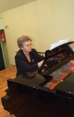
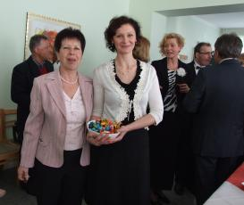

do aktualności
do aktualności2012-04-29
Godzina 6.30 - pobudka, pobudka, pobudka… chociaż oczy się „kleją” szybko wstajemy i na śniadanie. Wszyscy są podekscytowani, bo tak naprawdę, to pierwszy dzień koncertów i zwiedzania.
Wyruszamy autokarem do centrum. Po drodze podziwiamy Rygę z okien. O! patrzcie oni też mają Pałac Kultury, trochę mniejszy niż nasz, ale i Łotwa mniejsza.
Spotykamy się z przewodnikiem i … w miasto.
Podobno jest to miasto kotów ... i jest!
Chodzimy z zadartymi głowami, podziwiając piękno Rygi. Dobrze, że buzie mamy zamknięte :)
No cóż pora wracać, gdyż „Camerata” rozpoczyna swoje tournée koncertami w Rydze.
Pierwszy z nich, poprzedzony Mszą Świętą w języku polskim, odbędzie się o godz. 12.00 w Kościele Matki Bożej Bolesnej, gdzie proboszczem jest ks. Andrzej Trapuczka. Przebieramy się i jedziemy na nasz pierwszy koncert. Jesteśmy na miejscu. Chwila skupienia przed mszą.
Pierwszą część śpiewamy z chóru.
Schodzimy na dół i ustawiamy się przy ołtarzu. Tutaj będziemy śpiewać drugą, koncertową część.
Koncert chóru był niezwykle ciepło odebrany przez publiczność, którą w większości stanowili nasi rodacy, mieszkający w Rydze oraz przez księży tego kościoła.
No i pożegnanie.
Łezka w oku się kręci, ale trzeba kończyć, bo przed nami jeszcze jeden koncert. Teraz chwila odpoczynku i znowu przebieramy się i jedziemy na drugi w dniu dzisiejszym koncert. W skupieniu słuchamy ostatnich uwag pani dyrygent i już jesteśmy na miejscu.
Drugi koncert, odbędzie się w Sali Koncertowej Pardaugawskiej Szkoły Muzyki i Sztuki. Koncert zorganizowali : dyr. Szkoły Muzyki i Sztuki – pani Agnese Stage oraz ekspert ds kultury, nauki i mediów z Ambasady RP w Rydze – dr Krystyna Borkowska.
Na koncercie jest obecny Jerzy Marek Nowakowski, Ambasador RP w Republice Łotewskiej.
Zaczynamy od Bogurodzicy w wykonaniu samych panów, których wspiera gościnnie, zaproszony przez chór - Konrad Szota. Utwór przyjęto gromkimi brawami.
Teraz już chór w komplecie, niestety już bez wsparcia zaproszonego solisty. Koncert toczy się wartko. Występuje chór i soliści. Solistką jest również nasza pani dyrygent Izabela Szota. Wszystkim perfekcyjnie akompaniuje pani Maria Rydzewska.

Koncert zakończył się wielkimi brawami, potem kwiaty i podziękowania a na końcu małe „co nie co” i rozmowy, rozmowy, wspomnienia.

Wychodzimy po koncercie zmęczeni, ale zadowoleni, koncert wypadł super.
Postanawiamy pochodzić jeszcze po Rydze, bo jutro jedziemy dalej.
Pora wracać do hotelu, bo jutro czeka nasz dalsza droga i koncert.
do aktualności